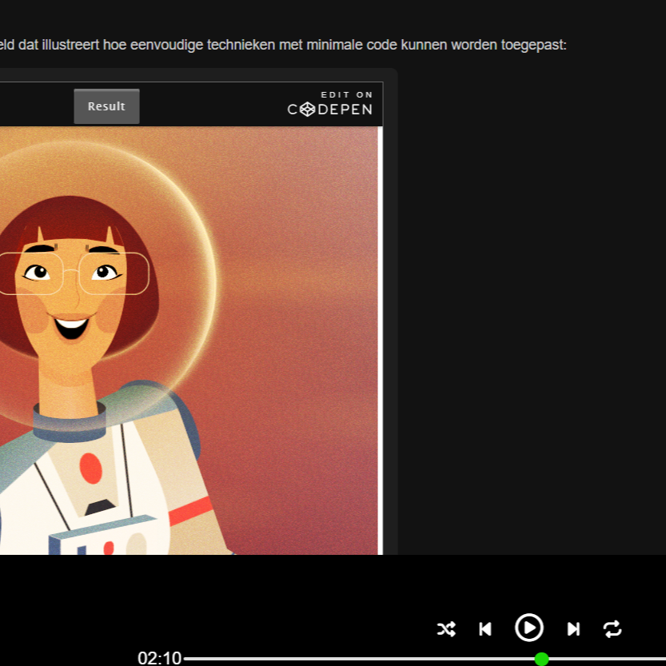

Over dit project
Voor dit project heb ik een interactieve website ontwikkeld die geïnspireerd is op de interface en uitstraling van Spotify. Het doel was om een moderne muziekwebsite te ontwerpen waarin gebruikers eenvoudig door content kunnen navigeren en een duidelijke, aantrekkelijke gebruikerservaring krijgen.
Tijdens het project lag de focus op het combineren van design en front-end development. Daarbij heb ik gewerkt aan een consistente visuele stijl, duidelijke contentstructuur en een interface die zowel aantrekkelijk als gebruiksvriendelijk is.
Dit project is gemaakt als schoolopdracht binnen de minor Web Design & Development aan de HvA.
Mijn rol
Ik was de enige die aan dit project werkte, waardoor alle onderdelen van het ontwerp en de ontwikkeling door mij zijn gemaakt.
De website is ontwikkeld met HTML, CSS en JavaScript. Hierbij lag de focus op het creëren van een moderne en intuïtieve gebruikerservaring, passend bij de uitstraling van een muziekplatform.
User flow
De gebruikersflow van de website is ontworpen om zo duidelijk en overzichtelijk mogelijk te zijn. Gebruikers komen binnen op de hoofdpagina, waar verschillende cards worden weergegeven met content en onderwerpen. Vanuit deze cards kunnen gebruikers doorklikken naar aparte pagina’s met meer informatie of volledige blogartikelen.
Door gebruik te maken van een duidelijke navigatiestructuur, herkenbare visuele elementen en een consistente opbouw wordt de gebruiker stap voor stap door de website geleid. Hierdoor blijft de interface overzichtelijk en kunnen bezoekers eenvoudig de content vinden die zij zoeken.
Ontwerpproces
Het ontwerpproces begon met het analyseren van bestaande muziekplatformen, waarbij vooral is gekeken naar de opbouw, sfeer en navigatie van Spotify. Hierbij heb ik onder andere gekeken naar het gebruik van een sidebar, kaarten (cards) voor content en een duidelijke visuele hiërarchie.
Vervolgens ben ik direct begonnen met het ontwikkelen van de website. Dit was een vereiste binnen de HvA-opdracht, waarbij het doel was om onze programmeervaardigheden te testen. Hierdoor vond een groot deel van het ontwerpproces direct plaats tijdens het bouwen van de website.
Tijdens het ontwikkelen heb ik geëxperimenteerd met verschillende layouts, kleuren en componenten om een interface te creëren die visueel aansluit bij de sfeer van een muziekplatform. Door tijdens het bouwen te testen en aanpassingen te maken, kon het ontwerp stap voor stap worden verbeterd.

Testen en iteraties
Tijdens het ontwikkelen is de website meerdere keren getest op gebruiksvriendelijkheid, visuele balans en responsive gedrag. Hierbij is gekeken of de navigatie duidelijk genoeg was en of de interface op verschillende schermgroottes goed bleef werken.
Omdat we de eerste twee weken van de minor met alle studenten in dezelfde ruimte werkten, konden we regelmatig elkaars werk bekijken en feedback geven. Hierdoor ontstond er een informele testomgeving waarbij ideeën en verbeterpunten snel werden besproken.
Op basis van deze feedback zijn onderdelen aangepast, zoals de positionering van content, de spacing tussen elementen en de duidelijkheid van interactieve componenten. Hierdoor werd de website uiteindelijk consistenter en prettiger in gebruik.
Belangrijkste functionaliteiten
- Overzichtelijke muziekinterface geïnspireerd door Spotify
- Duidelijke navigatie tussen verschillende onderdelen van de website
- Responsieve layout voor desktop en mobiel
- Interactieve elementen met JavaScript
- Consistente styling met focus op sfeer en gebruiksvriendelijkheid
Uitdagingen & leerpunten
Een belangrijke uitdaging binnen dit project was het ontwerpen en bouwen van een interface die visueel sterk is, maar tegelijkertijd overzichtelijk en gebruiksvriendelijk blijft. De website moest de sfeer van Spotify oproepen zonder onduidelijk of te druk te worden.
Tijdens het ontwikkelen heb ik geleerd hoe belangrijk visuele hiërarchie, consistente spacing en een logische layout zijn binnen een interface. Daarnaast heb ik mijn front-end vaardigheden verder ontwikkeld door interactieve onderdelen en responsief gedrag uit te werken.
Een andere uitdaging was dat ik moest verder werken op een bestaande website. In de eerste weken van de minor moest deze website worden uitgebreid met een blogfunctie. Uiteindelijk heb ik ervoor gekozen om de bestaande cards te gebruiken als navigatie naar aparte blogpagina’s. Hierdoor bleef de structuur van de website overzichtelijk en konden gebruikers eenvoudig doorklikken naar de volledige artikelen.
Eindresultaat
Het eindresultaat is een interactieve website met een duidelijke visuele stijl, geïnspireerd door Spotify. Het project laat zien hoe design en front-end development samenkomen in een gebruiksvriendelijke en moderne interface.
Bekijk de code Bekijk de websiteReflectie
Tijdens dit project heb ik veel geleerd over het combineren van design en front-end development. Omdat ik direct moest beginnen met het bouwen van de website, heb ik ervaren hoe belangrijk het is om tijdens het ontwikkelen continu kleine verbeteringen door te voeren. Door te experimenteren met layout, spacing en visuele hiërarchie kon het ontwerp stap voor stap worden verbeterd.
Daarnaast heb ik geleerd hoe een herkenbare stijl, zoals die van Spotify, vertaald kan worden naar een eigen interface zonder deze letterlijk te kopiëren. Het analyseren van bestaande interfaces hielp mij om beter te begrijpen hoe navigatie, contentstructuur en visuele elementen samenwerken binnen een moderne webinterface.
Als ik meer tijd had gehad, zou ik de website verder uitbreiden met extra interactieve functionaliteiten, zoals dynamische content of een uitgebreider blogsysteem. Ook zou ik meer aandacht besteden aan micro-interacties en animaties om de gebruikerservaring nog sterker te maken.